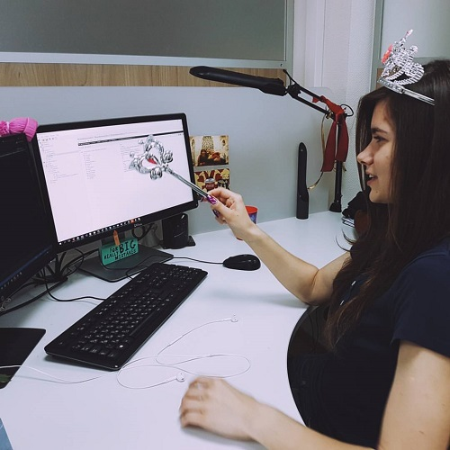

Hanna Zaneuskaya
5+ years in IT, 4+ year experience in development for Digital Marketing area
Solution and subsystems design, implementation experience of different types of applications based
on
.NET technology stack.
Hands-on experience with Microservices architecture, ADAM (digital asset management) platform.
Good knowledge in SDLC and processes.
Skills
- Core skills: .NET, ASP.NET MVC, ASP.NET Web Api, ASP.NET Core 2.0, ADAM
- Languages: C#, JavaScript
- Tools and Technologies: Rabbit MQ, Apache Kafka, Redis, ElasticSearch, GraphQL, Azure Cognitive services, TeamCity, Jira, Google Cloud Storage, Azure Cloud Storage, ImageMagick, MDK, FFMPEG, PowerShell, Blockchain
- Source Control: Git
- Databases and ORMs: MongoDB, Azure Cosmos DB, Entity Framework
- Methodologies: Scrum
- Front-end Frameworks: UIKit, Foundation
- Testing: NUnit, Selenium
Code examples
I created site for "Greenstyle" cattery of bengals cats. You can see site Here
English
According to EPAM English assessment
Speaking - B2
Writing - B2
Achievements
- ADAM Platform certified developer
- Winner of EPAM DEP Hackathon "From Slides To Real Life"
- Participant of EPAM DEP "Make it Digital!"" Hackathon
Education
Belarusian State University, Minsk, Belarus — Bachelor’s degree in Mathematics, 2016